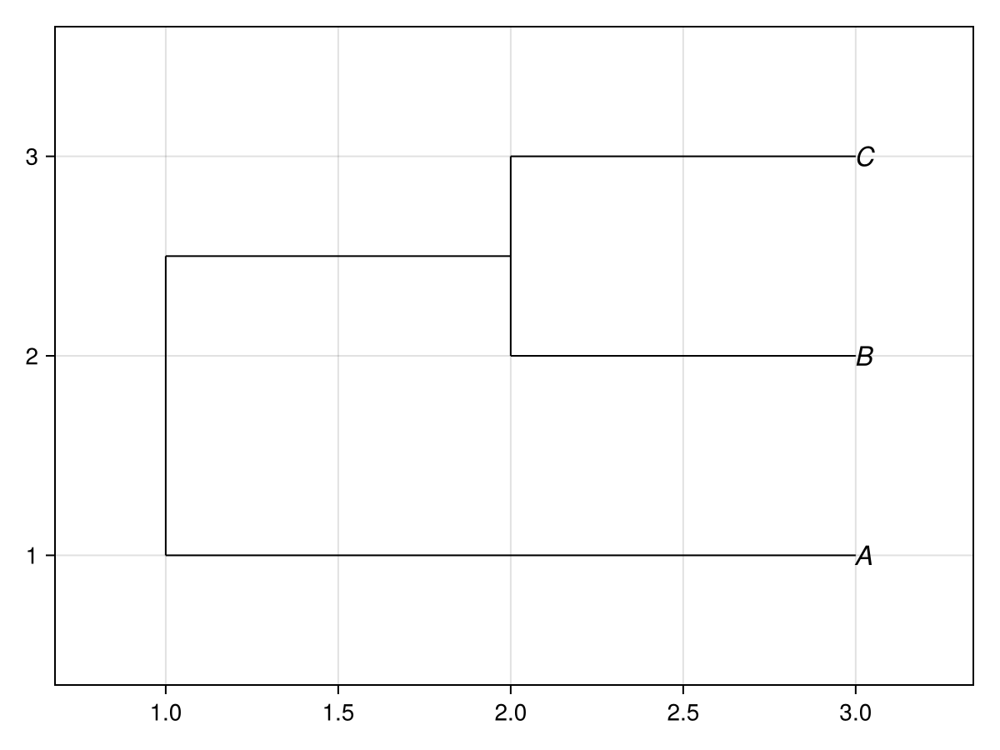
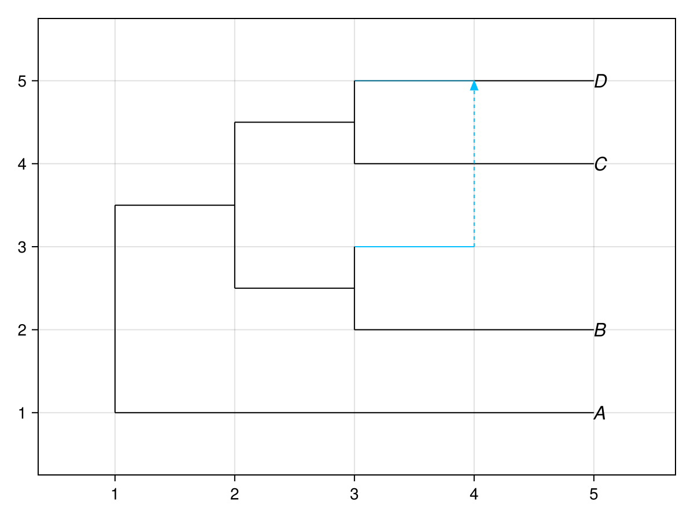
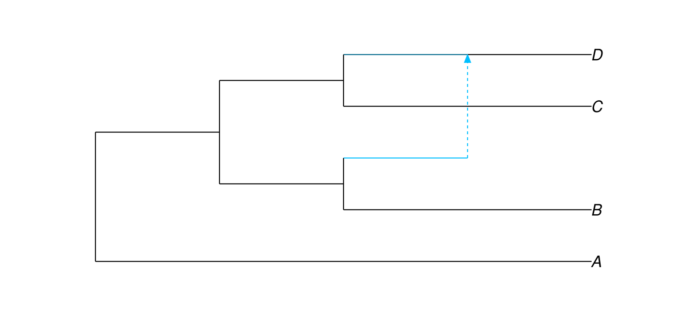

Getting started
Start with a PhyloNetworks.HybridNetwork. This example reads a small network from an extended Newick string:
julia> net = parsephylogeny(NewickFormat(), "(A,((B,#H1),(C,(D)#H1)));")PhyloNetworks.HybridNetwork, Rooted Network 9 edges 9 nodes: 4 tips, 1 hybrid nodes, 4 internal tree nodes. tip labels: A, B, C, D (A,((B,#H1),(C,(D)#H1)));
For literal content containing exactly one phylogeny, use the corresponding format-specific string literal:
literal_plot = phyloplot(newick"(A, (B, C));")
literal_plot
Both newick"..." and nexustreeblock"..." require exactly one parsed phylogeny. Use parsephylogenies when the content may contain multiple phylogenies, then select or plot each returned value explicitly.
Call plot to create a new Makie figure, axis, and PhyloMakie plot object:
figaxisplot = plot(net)
figaxisplot.figure
The returned value is a Makie.FigureAxisPlot. Its plot field is the live PhyloPlot object. Use that object when you want to update attributes or query the rendered coordinates.
plot_handle = figaxisplot.plot
typeof(plot_handle)Makie.Plot{PhyloMakie.phyloplot, Tuple{PhyloNetworks.HybridNetwork}}PhyloMakie also provides phyloplot as a package-specific alias for plot:
alias_figaxisplot = phyloplot(
net;
showgamma = true,
showtiplabel = true,
)
alias_figaxisplot.figure
To draw into an existing Makie axis, use plot! or phyloplot!:
figure = Figure(size = (700, 320))
axis = Axis(figure[1, 1])
hidedecorations!(axis)
hidespines!(axis)
phyloplot!(
axis,
net;
showgamma = true,
useedgelength = false,
)
figure